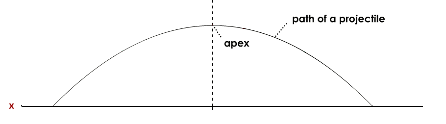
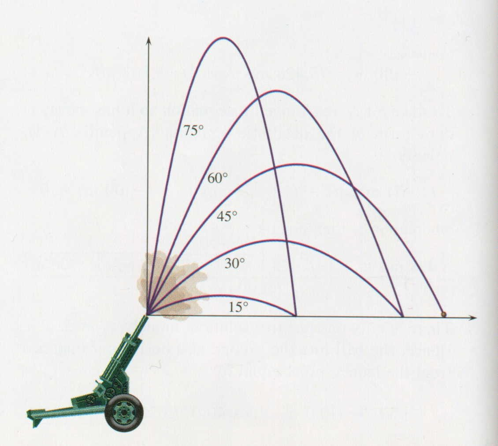
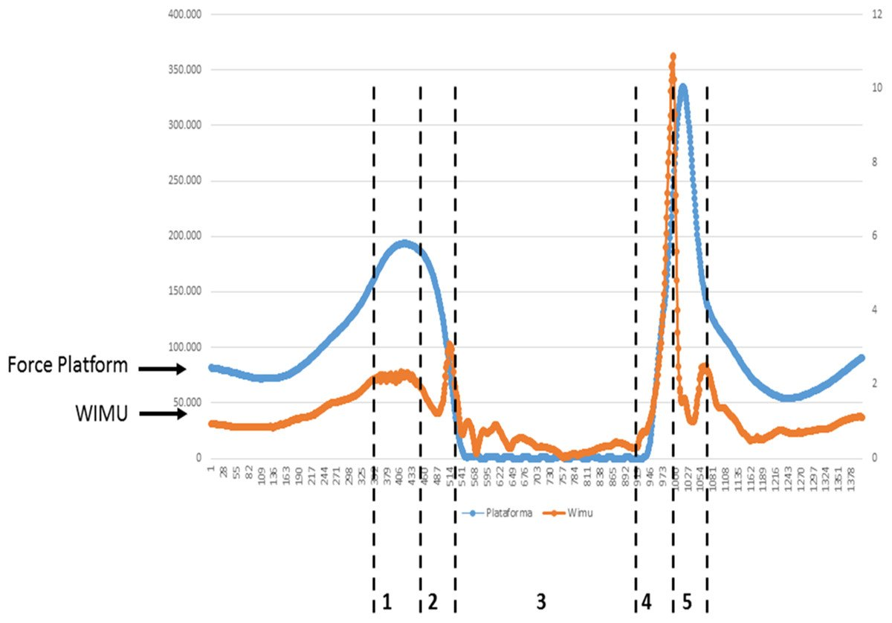
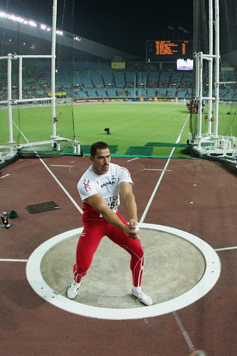

A projectile is any object, not in contact with the ground,
that is allowed to move under the influence of gravity and no other external force.
the acceleration of the object is constant (uniform acceleration)
The human body can be considered a projectile whenever it is airborne (running,
jumping, falling, etc.)
Because everything on earth has the same acceleration due to
gravity we can use equations to predict where an object that is in flight will be if we
know certain variables
Projectile Motion
An object in flight on earth will always follow a parabolic path.
We can use calculus to derive the equations of motion and then use these equations to
solve for an object’s kinematic values as it travels through space
Parábola Hídrica
Projectile Motion
A parabola is a symmetrical curve.
That is, it has a peak (also called apex) in the middle and the curve
is the same on both sides of the peak

Why a parabola?
Why do objects on earth follow a parabolic path when thrown?
We need to think about force vectors and derive equations of motion
We know that when we throw an object it will follow a path like the one below. Assume that
the blue vector is the initial velocity.
When the object is released or thrown it has only one force of gravity acting on it.
The two components, separately
Projectile Motion
Consider the x (horizontal) and y (vertical) components separately.
Suppose a ball was thrown straight up and the vertical displacement was determined at
different times.
How would we find out the initial velocity if we knew that it took 6 seconds for the
object to leave the ground and then land?
Some important questions
if an object is thrown vertically upward?
What would be the equation to describe it’s acceleration?
If you have the equation for acceleration how would you determine it’s equation for velocity
and displacement? (Hint: use calculus)
Same chain as the calculus lecture: differentiate to go down,
integrate to come back up.
Deriving the vertical equations
Due to gravity the vertical acceleration of a projectile is −9.81 m/s²
Therefore we can make an equation for acceleration for the vertical motion of any object
in free flight
ay(t) = −9.81
to find the equation for velocity we need to take the integral. When we
do this we get the equation
vy(t) = −9.81t + voy
to find the equation for displacement we find the integral again
dy(t) = (−9.81/2)t² + voyt + doy
We add unknowns to represent the initial values
Back to the question
For an object thrown vertically how would we find out the initial velocity if we knew that it
took 6 seconds for the object to leave the ground and then land?
We derived the equations of motion, lets look at them to see which can help us solve this
problem
Which equation(s) would you use to solve this problem? What information do you need
to know?
Which equation?
Since we are looking for initial velocity the equation below would be the simplest one to
solve
vy(t) = −9.81t + voy
But we only know t and so we need to find out what vy(t) is.
Maybe some information about projectiles may help us solve the problem
Important features of projectiles
At the apex the vertical velocity is zero
Also the apex is the highest point achieved
If a projectile takes off and lands at the same height then the apex occurs at
½ the total flight time
The vertical component of velocity at the beginning of the flight is equal but opposite
to the vertical component at the end of the flight
Solving for the initial velocity
So now we can use that information to solve for the initial velocity… how?
if we solve for the following equation at the apex then we know
t = ½(6 s) = 3 s and vy(t) = 0 m/s
vy(t) = −9.81t + voy
0 = −9.81(3) + voy
voy = 29.43 m/s
That leaves us with one unknown… the initial velocity
And the maximum height
Now we can find some other values as well, such as what is the maximum height
achieved
To find the highest vertical displacement we need to solve for the dy(t) at
the apex
We know t at the apex is ½(6) = 3 s and if we assume doy = 0
dy(t) = (−9.81/2)t² + voyt +
doy
dy(3) = (−9.81/2)(3)² + 29.43(3) + 0
dy(3) = −44.145 + 88.29
dy(3) = 44.145 m
Horizontal kinematics
Now that we understand the vertical acceleration, velocity and displacement of a projectile
lets talk about the horizontal kinematics
When an object is not in contact with the ground it’s horizontal acceleration is
zero
Remember that the acceleration due to gravity only acts vertically downward
ax(t) = 0
Deriving the horizontal equations
Then we can determine the equations for horizontal velocity and displacement
ax(t) = 0
to find the equation for velocity we need to take
the integral. When we do this we get the equation
vx(t) = vox
to find the equation for displacement we find the
integral
dx(t) = voxt + dox
Why are horizontal projectile kinematics important?
The horizontal velocity stays constant throughout the flight. This results in a
horizontal displacement defined by the time that it takes the object to rise and
fall vertically
It is both the vertical and horizontal kinematics of a projectile that defines the
parabolic flight path.
Adding the components back together
If we consider the horizontal and vertical velocity vector components together
they demonstrate why the object has a parabolic path. If we add the components we can see that
the resultant velocity vector is in the direction of the parabolic flight (as we would
expect)
The angle of release
The optimal angle of release for height is different than the optimal
angle of release for distance.
Assuming you cannot change the magnitude of the velocity
The optimal angle for height is 90 degrees or straight up.
The optimal angle for distance is 45 degrees
This concept can be proved by looking at the components of the initial velocity to
optimize both time in the air and horizontal displacement.

45° for distance, 90° for height
Two more equations
I always prefer to use the derived equations of motion but here are two more equations
that you can use to solve projectile motion problems
But… where did they come from?
d = ½(v0 + vf)t
vf² = v0² + 2ad
Where d = ½(v₀ + v𝒇)t comes from
Let's see if we can find out where this equation came from. It is similar to the equation for
displacement
dy(t) = ½ at² + voyt +
doy
If we assume that doy = 0
dy(t) = ½ at(t) + voyt
a = v/t, or v = at, or vf −
vo = at
dy(t) = ½ (vf −
vo)t + voyt
2dy(t) − 2voyt =
(vf − vo)t
2dy(t) = vft −
vot + 2voyt
dy(t) = ½ (voy +
vfy)t
Where v𝒇² = v₀² + 2ad comes from
Let's see if we can find out where this equation came from. Let's start with 2 equations that
we already know
vy(t) = at + voy
dy(t) = ½ at² + voyt +
doy
And solve for t in the first one
vfy = at + voy
t = (vfy − voy)/a
Then sub in the equation for t into the second
equation
Therefore to use this equation we need to assume
that doy is zero
Measuring flight time
Jump mat
Measures time in the air and outputs jump height
So then what calculations does the jump mat use to determine jump height?
What could be some errors involved in the measurements?
Force plate — measures time in the air and calculates initial
velocity
iPod — jump time app; measures the period of time when the
accelerometer doesn’t measure any force
Reading the flight off the signal
iPod acceleration data, from “accelerometer data logger”. The flat section is
the flight: 0.6 s with no force on the accelerometer at all.
Force platform and wearable inertial unit recorded together.

Strategies to Solving Projectile Problems
Determine specifically what is asked for and when necessary draw a diagram
List all known variables — include those given in the question and those that you are able to
figure out without calculation
Derive the equations of motion and choose the equation that allows you to use your variables
to solve for the answer to the question (this may take more than one step as you may have to
solve for other unknowns first)
Plug in your variables and solve for the answer
Do a reality check (ie: check to see if your values seem reasonable)
Projectile Motion
Example Problem #1
An Olympic hammer thrower has one attempt left to break the current men’s
world record of 86.74 m. If he releases the hammer with a horizontal component of initial
velocity of 22.09 m/s, and the hammer has a flight time of 3.95 s, does he break the world
record?

Projectile Motion
Solution
Remember, horizontal displacement is determined by the horizontal velocity and the time
that the projectile is in the air
In this question, we are given:
V0 (horizontal) = 22.09 m/s
t = 3.95 s
Since we are dealing only with a horizontal velocity, we know that acceleration is zero
(gravity only acts on the vertical component)
a = 0 m/s²
Projectile Motion
Solution
Therefore, use this equation: dx(t) =
v0t + d0x
d = (22.09 m/s) (3.95 s)
d = 87.26 m
Yes, he breaks the world record by 0.52 m with a throw of
87.26 m
Projectile Motion
Example Problem #1 — the figure
Projectile Motion
Example Problem #2
A high-jumper is attempting to break the women’s world high jump record of
2.09 m (6’10”). If she has a vertical component of initial velocity of 6.16 m/s, does she
break the world record (or at least achieve a height that would allow her to clear the
bar)?
Projectile Motion
Solution
In this question, we are given:
V0 (vertical) = 6.16 m/s
Since we are dealing with a vertical velocity, we know that acceleration is equal to
gravity
a = −9.81 m/s²
We are only considering the upward path of the high jumper, therefore, the final vertical
velocity (at the apex of the jump) will be zero
Vf (vertical) = 0 m/s
Projectile Motion
Solution
With these known variables, one equation that we could use is:
vy(t) = −9.81t + voy
and assume that we are finding the time at the apex. Therefore
vy(t) = 0
0 = −9.81t + 6.16
t = 0.629 s
then we can substitute t into the equation dy(t) =
−(½)9.81t² + voyt + doy — assume doy = 0
dy(0.629) = −4.905(0.629)² + 6.16(0.629)
dy(0.629) = −1.9406 + 3.874
dy(0.629) = 1.93 m
No, she does not break the world record.
Projectile Motion
Solution (alternative way)
Alternatively you could use another equation; for example we could use:
vf² = vi² + 2ad
(0 m/s)² = (6.16 m/s)² + (2)(−9.81 m/s²)(d)
(19.62 m/s²)(d) = (6.16 m/s)²
d = 1.93 m
No, she does not break the world record.
Projectile Motion
Example Problem #2 — the figure
Projectile Motion
Example Problem #3
A soccer player kicks a ball at an angle of 25° from horizontal, with an
initial speed of 21 m/s. How high and far does the ball go?
Projectile Motion
Solution
First we will resolve the resultant velocity vector into its components
Then we will use the vertical velocity component to calculate the height that the ball
reaches and the time that the ball spends in the air
Finally we will use this time value and the horizontal velocity component to calculate the
horizontal distance.
Projectile Motion
Solution
21 m/s at 25°
Vertical Component:
sinθ = Opposite / Hypotenuse
Opposite = (Hypotenuse)(sinθ)
Opposite = (21 m/s)(sin25°)
Opposite = 8.9 m/s
Horizontal Component:
cosθ = Adjacent / Hypotenuse
Adjacent = (Hypotenuse)(cosθ)
Adjacent = (21 m/s)(cos25°)
Adjacent = 19.0 m/s
Projectile Motion
Solution
The Path Upward (time):
v0 (vertical) = 8.9 m/s vf (vertical) = 0 m/s
a = −9.81 m/s²
vf = at + v0
(0 m/s) = (8.9 m/s) + (−9.81 m/s²)(t)
t = 0.91 s
Remember that this is the time taken for the ball to travel from the ground to
its highest point. For the way up and down, we must multiply this value by two.
v0 (vertical) = 8.9 m/s vf (vertical) = 0 m/s
a = −9.81 m/s²
vf² = v0² + 2ad
(0 m/s)² = (8.9 m/s)² + (2)(−9.81 m/s²)(d)
d = 4.04 m
The ball travels 4.04 m upwards.
Projectile Motion
Solution
Horizontal Distance Travelled:
We will use this equation: d = v0t + d0
d = (19.0 m/s) (1.82 s)
d = 34.6 m
The ball travels 34.6 m horizontally.
Projectile Motion
Example Problem #3 — the figure
Projectile Motion
Example Problem #4
In the 2005 Homerun Derby, Bobby Abreu hit a baseball at an angle of 37° from
horizontal, with an initial speed of 120 km/hr from an initial height of 1.2 m. How high
and far does the ball go?
Projectile Motion
Solution
First we will convert km/hr to m/s
Next we will resolve the resultant velocity vector into its components
Then we will use the vertical velocity component to calculate the time that the ball spends
in the air (keeping in mind that the ball was hit from an additional 1.2 m from the
ground)
Finally we will use this time value and the horizontal velocity component to calculate the
horizontal distance.
Projectile Motion
Solution
120 km/hr × 1000 m ÷ 3600 s =
33.3 m/s · 33.3 m/s at 37°
Vertical Component:
sinθ = Opposite / Hypotenuse
Opposite = (Hypotenuse)(sinθ)
Opposite = (33.3 m/s)(SIN 37°)
Opposite = 20.0 m/s
Horizontal Component:
cosθ = Adjacent / Hypotenuse
Adjacent = (Hypotenuse)(cosθ)
Adjacent = (33.3 m/s)(cos37°)
Adjacent = 26.6 m/s
Projectile Motion
Solution
The Path Upward:
vf = at + v0
(0 m/s) = (−9.81 m/s²)(t) + (20.0 m/s)
tup = 2.04 s
Calculates the time for the ball to travel from the bat to the apex.
d = (½)at² + v0t + do
d = (½)(−9.81 m/s²)(2.04)² + (20 m/s)(2.04) +
(0 m or 1.2 m)
d = 20.4 m or 21.6 m
Projectile Motion
Solution
The Path Downward:
For the path downward, the vertical distance travelled is equal to that traveled during the
path upward plus 1.2 m.
The initial velocity is 0 m/s, but we do not know the final velocity
d = (½)at² + v0t + do
0 m = (½)(−9.81 m/s²)(t)² + (0 m/s)(t) +
(20.4 m + 1.2 m)
tdown = 2.10 s
Projectile Motion
Solution
Total Time in Air = tup + tdown
ttotal = 2.04 s + 2.10 s = 4.14 s
The Horizontal Distance Travelled:
d = (½)at² + v0t
d = (½) (0 m/s²) (4.14 s)² + (26.6 m/s) (4.14 s)
d = 110.1 m
The ball reaches a height of 21.6 m and travels 110.1 m horizontally.
Projectile Motion
Example Problem #4 — the figure
Projectile Motion
Sample Problem
Find the time in the air for a man jumping up on the platform and how far he
will travel horizontally
Given:
initial velocity = 6 m/s 45°
height of landing = 1.8 m
Projectile Motion
Step 1: Derive the equations of motion
Since gravity is the only force acting on the subject, the acceleration in the y
direction is −9.81 m/s² and the acceleration in the x direction is 0 m/s². We use integral
calculus to yield the velocity and displacement equations.
1) ay(t) = −9.81
2) vy(t) = −9.81t + voy
3) y(t) = (−9.81/2)t² + voyt + yo
4) ax(t) = 0
5) vx(t) = vox
6) x(t) = voxt + xo
Projectile Motion
Step 2: Substitute known values for variables
Now we substitute the given information of this particular problem.
1) ay(t) = −9.81
2) vy(t) = −9.81t + 6sin45°
3) y(t) = (−9.81/2)t² + 6sin45°t + 1.2
4) ax(t) = 0
5) vx(t) = 6cos45°
6) x(t) = 6cos45°t + 0
Projectile Motion
Step 3: Use the appropriate equations
This is the most difficult step because we must look at our six equations of
motion and decide which one or ones will help us find the answer to the question that we have
been asked. In this case we have been asked to find the time in the air. Although time is part
of all of the equations, we know that at the instant of landing, the vertical displacement is
1.8 meters. Equation [3] is the vertical displacement equation and we must use this equation to
solve for t when y(t) = 1.8.
When we sub in all values into the equation and attempt to solve for t when
y(t) = 1.8 we are left with;
y(t) = (−9.81/2)t² + 6sin45°t + 1.2
1.8 = (−9.81/2)t² + 6sin45°t + 1.2
0 = (−9.81/2)t² + 6sin45°t − 0.6
This is a quadratic equation
Projectile Motion
Step 4: Solve for the unknown variables
We must use the quadratic formula to solve for the two values of t which
satisfy this equation.
Root of a Quadratic Equation for an equation in the form;
a·x² + b·x + c = 0 solve for x
x = (−b ± √(b² − 4·a·c)) / 2·a
In this case a = −4.905, b = 6sin45°, c = −0.6
Projectile Motion
Step 4: Solve for the unknown variables
Solving the equation above leaves two possible answers for t (using the
positive and negative roots).
Therefore we are left with two values of t:
t = 0.178 and t =
0.687
Projectile Motion
Step 4: Solve for the unknown variables
Due to the parabolic path of the jumper. The jumper's height was 1.8 meters
high at two instants in time (t1 and t2). We want the later time
(t2) because that is the time of landing. At the earlier time (t1) the
jumper was travelling upward. If we are ever uncertain about the direction, we can substitute
the time into equation [2] and if velocity is positive, the motion is upward and if the
velocity is negative, the direction is downward. Therefore, the time in the air is
0.687 seconds.
We were also asked to calculate the horizontal displacement on landing. We can
use equation [6] which is the horizontal displacement function knowing the time of landing is
0.687 seconds.
x(t) = 6cos45°t + 0
= 6cos45°(0.687) + 0
= 2.91 m
Projectile Motion
Sample Problem — the whole thing
Summary
A projectile moves under gravity alone, so ay = −9.81 m/s² and
ax = 0
Integrating those twice gives the six equations of motion, and the constants are the
initial velocity and the initial position
Vertical and horizontal are solved separately and share only
time
At the apex vy = 0; with a level take-off and landing the apex is at half the
flight time
45° is best for distance from ground level, 90° for height — raise the release point and
the best angle for distance drops below 45°
When take-off and landing heights differ, the flight time comes from a
quadratic, and the later root is the landing